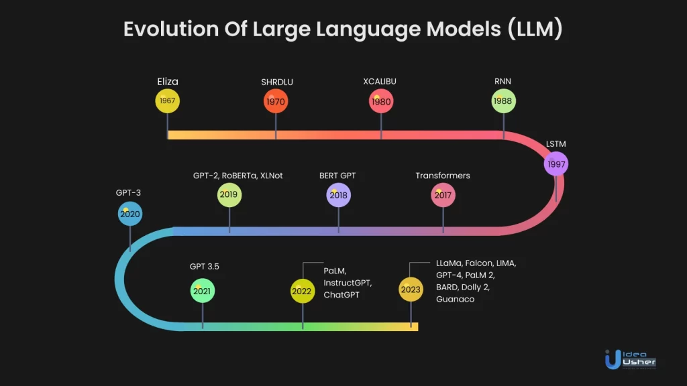

Statistische Modelle und Sprachmodelle (1970er - 1990er):
In den 1970er und 1980er Jahren wurden
statistische Modelle für die Sprachverarbeitung eingeführt, wodurch die Verarbeitung natürlicher Sprache
(Natural Language Processing, NLP) verbessert wurde. Hidden Markov Models und n-gram-Modelle waren einige
der
frühen Ansätze. Dennoch waren diese Modelle oft auf spezifische Anwendungsfälle beschränkt.
Aufstieg neuronaler Netzwerke (2000er):
Mit dem Aufkommen von leistungsstärkeren Computern und
größeren
Datensätzen erlebten neuronale Netzwerke, insbesondere Recurrent Neural Networks (RNNs) und Long Short-Term
Memory (LSTM) Netzwerke, einen Aufschwung. Diese Modelle ermöglichten eine bessere Modellierung von
Sequenzen und zeigten verbesserte Fähigkeiten in der Sprachverarbeitung.
Transformer-Architektur (2017):
Ein entscheidender Wendepunkt war die Einführung der
Transformer-Architektur
im Paper "Attention is All You Need" von Vaswani et al. im Jahr 2017. Transformer revolutionierte die Art
und Weise, wie Modelle Sequenzen verarbeiten, indem es auf Aufmerksamkeitsmechanismen setzte. Diese
Architektur ermöglichte eine effizientere Verarbeitung von Informationen in großen Datensätzen.
GPT-3 und Superlative (2020):
Im Jahr 2020 veröffentlichte OpenAI GPT-3, ein riesiges LLM mit 175
Milliarden
Parametern. GPT-3 setzte neue Maßstäbe in Bezug auf Sprachverständnis, -generierung und -verarbeitung. Es
konnte komplexe Aufgaben lösen und menschenähnlichen Text erzeugen.
Zeitleiste

The evolution of Large Language Models (LLMs) began with ELIZA, an early chatbot in the 1960s. In the 2010s,
Transformer architectures like BERT marked a milestone in natural language processing. GPT-3 by OpenAI (2019),
with
trillions of parameters, is the latest example of LLMs playing a crucial role in various applications.